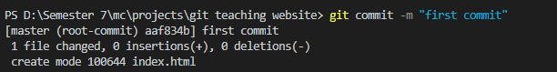

-
Create New Folder and open it in vs Code.

-
Open Terminal by Clicking on Terminal -> Open Terminal or you can use Ctrl+Shift+`.

To initialize git use "git init" command

-
Create New Repository on GitHub:
- Give your repository a name and also can write description.
- After that click on "Create Repository"

-
Come back to VS Code add new file with name index.html.
And write some code in it and save it by pressing Ctrl+S.
-
Now Check status of git that will show "Modified". To see git status write ""git status" command
-
Add changes to local repository. Write "git add . " command to do it.

To make these changes permanent write command "git commit". You can also specify message in success scenerio that you want to show.
 -
Coonect Local repository to your remote repository. Copy link form github repository and paster here in command given below.